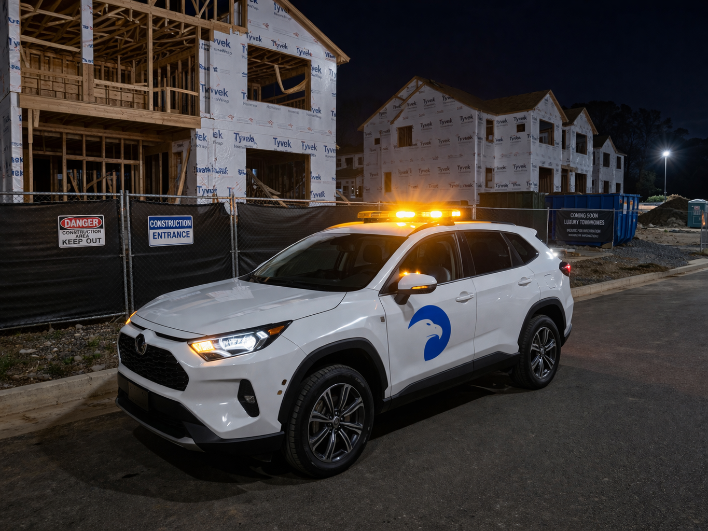
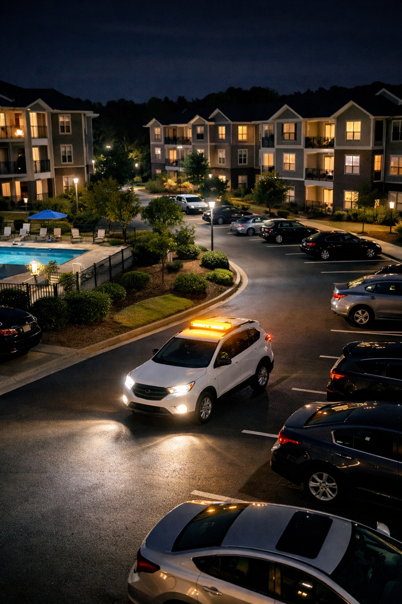

Dispatch-backed operations with documented incident response, management communication, and GPS-Verified Daily Activity Reports for multifamily, hospitality, parking, commercial, and development properties.
On-call response supports after-hours property operations with field presence that is calm, coordinated, and accountable. Teams respond to alarms and property concerns, observe site conditions, and communicate status through dispatch-supported workflows.

Response operations follow a consistent chain: dispatch intake, field verification, management communication, and documented closeout. Supervisors are included when escalation is needed, so property teams receive clear updates and dependable follow-through.
Calls are routed through dispatch, assigned to field personnel, and confirmed with location-specific instructions before arrival.
Management receives timely status updates while supervisor escalation remains available for incidents needing additional coordination.
After-hours resident-facing issues and alarm activity benefit from coordinated response and clear reporting.
Guest-facing operations require calm, professional incident handling and documented communication.
Structured and surface parking properties need quick observation and accountable closeout after calls.
Evening and overnight site checks support tenant confidence and property continuity.
Response coverage supports loading zones, perimeter activity, and after-hours operational concerns.
Access points, staging areas, and temporary infrastructure require disciplined response and reporting.
GPS-Verified Daily Activity Reports provide management visibility into response timing, field observations, and incident outcomes. Reports include timestamps, photo verification when applicable, and end-of-shift communication for operational accountability.

We can review your alarm protocols, recurring overnight concerns, and escalation expectations to build a practical on-call response plan for your property.